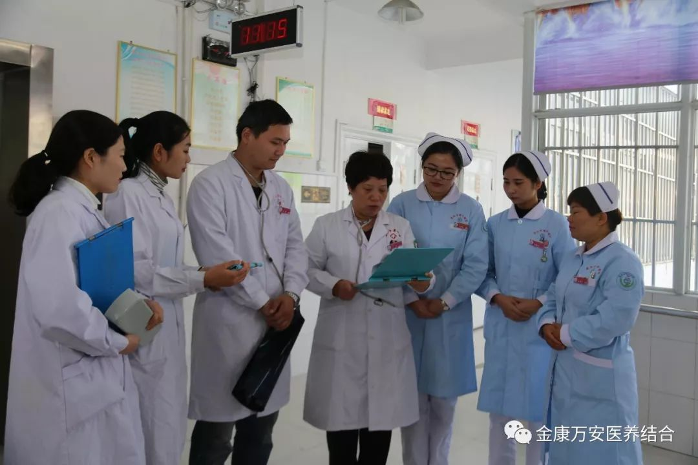
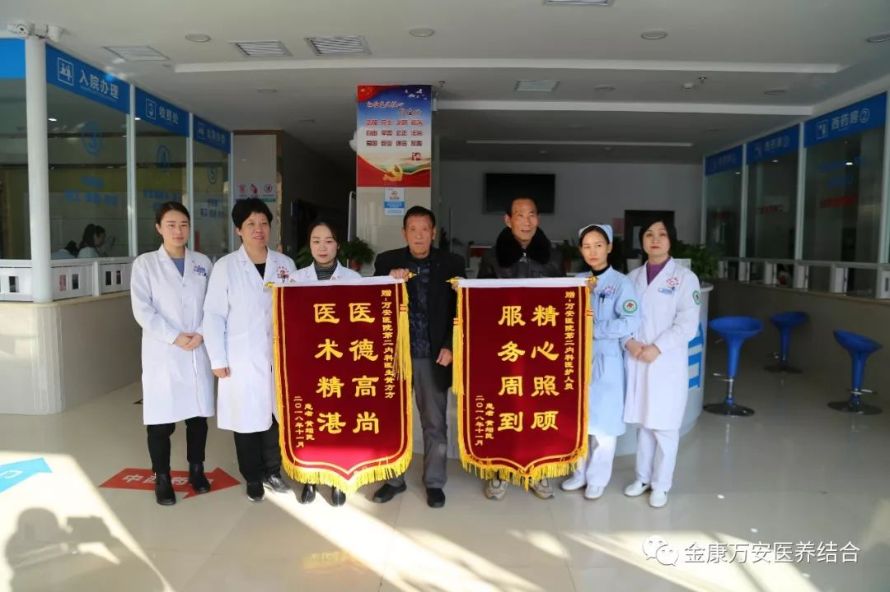
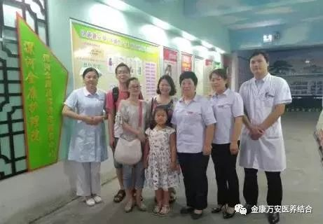

投票!投票!服务老人 情牵患者，感动漯河，等您来投票！
人气: "" 时间：2018-12-12
“感动漯河2018十大年度人物”候选人正式产生了！ 漯河金康护理院副院长张莉入选候选人，即日起至12月18日18时，
长按识别下图二维码选择8号张莉，请投出您宝贵的一票，感谢您的支持与参与！
感谢您的支持与参与，请投票
张莉事迹简介
张莉，女，汉族，51岁，中共党员，漯河金康护理院副院长。张莉从医三十多年来，一直坚持患者至上的职业理念。在金康护理院工作两年多来，为了尽快摸索出医养结合的发展思路，张莉通过外出考察学习，并结合我市实际情况，采取了一系列措施，为住院老人提供高质量的护理服务。

邢爷爷和王奶奶2013年来到金康护理院后一直住在一起，前年邢爷爷离世后，王奶奶由于寂寞和伤心，每天除了睡觉就是哭泣。张莉一直关注着王奶奶，只要听见王奶奶哭，不管再忙都会立刻赶来安慰王奶奶。时间长了，在张莉的开导下，王奶奶的心情逐渐好转起来。前段时间王奶奶突发脑梗，下肢红肿，张莉坚持每天用药物给老人泡脚热敷，王奶奶的儿子知道后激动地说：“张院长，你把我们做儿女的行孝活儿都干完了！”，并送来四面锦旗表示感谢。

遇到老人突然生病，张莉总是随叫随到，即使半夜接到电话，也会毫不犹豫赶来，直到老人病情稳定才会放心离开。对于同事，张莉也非常关心。一次，一位员工出差时，母亲恰好生病住院。张莉得知后，主动承担起照顾老人的责任，每天为老人做饭送饭。起初同事们都不知道，直到有一天老人到护理院对张莉表示感谢，大家才知道原来是张莉在默默地付出。

工作之余，张莉也在积极回馈社会。近年来，为了配合精准扶贫政策，张莉经常组织大家到社区开展义诊活动。一次，张莉了解到召陵区古同村和铁炉村贫困家庭较多，于是经常组织护理院职工到两个村庄开展免费义诊和送医送药活动，邀请特困村民进行免费体检，为精准扶贫做出了积极贡献。